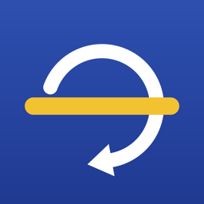

さかあがりコーチ

横から撮った 1 回の逆上がりの動画から、回れない原因を 1 つに絞り、その原因に合う練習だけを出す iPhone アプリです。
- 踏み込みの位置・肘の曲がり・蹴り足の高さ・おへそと鉄棒の距離を、端末の中で測ります
- 原因ごとに 3 段の練習（回数の目安・補助の手の位置・かける言葉）
- 初日とできた日を並べた比較動画を、顔を自動でぼかして書き出せます
- 動画は iPhone の外に送りません。アカウント登録もいりません

横から撮った 1 回の逆上がりの動画から、回れない原因を 1 つに絞り、その原因に合う練習だけを出す iPhone アプリです。